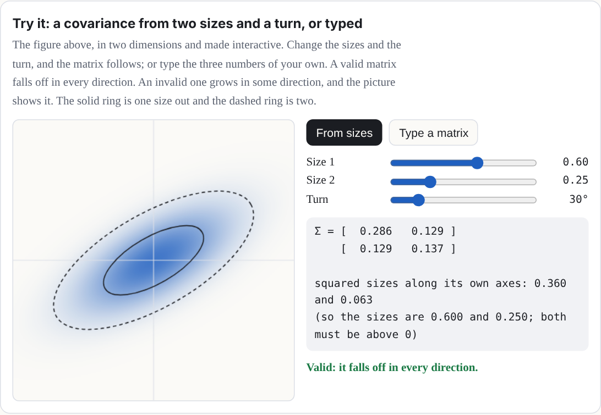
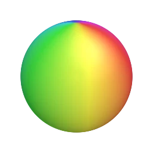

How to program Gaussian splats: what one splat is, how the toys are built, and a small
language for writing your own splat equations, and toys that show pictures and read what
you type.
Every toy in the
Splashery Playground
is made of Gaussian splats: tens of thousands of soft, colored blobs that blend into a
solid-looking thing. This manual is for anyone who knows some math and wants to make
splats do what they say. It goes level by level. You can stop after any level and still
have something to play with.
One note on that opening line. The photo toys (Photo to 3D and Moving photo to 3D) open in
a Sharp view, a second way to see the same photo: the picture at its full
resolution on a relief lifted by the same depth, so small text stays readable. They are
still splats. The Splats / Sharp switch in the toy's panel brings the splats back. (The
Studio toys are behind the labs switch; see "What else Splashery does now".)
The level map
A ladder, from one splat toward making your own. Each rung stands on the one below.
Definitions, derivations, notes, and long tables start folded.
Level 1What a splat is
A splat is a small cloud of color floating in space. Up close, it looks like a soft
ellipse, bright in the middle and fading at the edges. On its own, it is nothing much. Put
thousands side by side, however, and they melt into surfaces: a torus, a seashell, a cat –
practically any object imaginable can be built from splats!
100 splats
400 splats
6,000 splats
The same sphere with more and more splats, made with the Splat equation toy. With few
splats you see each soft blob; with enough of them, they blend into one smooth surface.
What is a 3D Gaussian?
Think of a smooth weight field centered at a
point μ. Three positive widths and a
rotation shape it: the places where the weight is equal form nested ellipsoids. The weight
G is 1 at the center and falls off with distance measured in units of those
widths. To draw one, the renderer flattens the field into an elliptical patch on the
screen, gives it a color, and blends its opacity over the patches behind it. A splat is
neither a surface of triangles nor a rigid little ball. Here G peaks at 1, so
it is a weight, not a probability density (which would be scaled to add up to 1).
Two terms: weight field and positive widths
A weight field is a number at every point in space: 1 at the center, and falling
off the farther you go. The three positive widths are the splat's sizes along its
own three axes. They must be above zero, because a width of zero would make the formula
below divide by zero.
Three ways splats come to exist (Figure 1). Do not mix them up:
A recipe's placed splats. A toy's recipe places them by rule: points sampled on
the shapes of the kit (Splashery's toy-building library, Level 2), each given a
size, a rotation, and a color. Nothing is fitted to photos.
A trained capture. A splat file made by other software from many photos of a real
thing, then opened here (.ply, .sog, .splat, or
.spz). The page shows these; it does not train them.
The one-photo teaching fit. The Gaussian splatting toy fits flat, 2D Gaussians to
a single picture by gradient descent. It shows the fitting idea; it is not a 3D
reconstruction.
Figure 1. Three different things are called "splats". Only the first two make a 3D object;
the third fits a flat picture.
The numbers in one splat
Each splat is described by a handful of numbers:
Part
Numbers
What it means
Center μ
3: x, y, z
Where the middle of the splat is.
Sizes s
3: s1, s2, s3
How far it spreads along each of its own three axes. Equal sizes make a ball; one
small size makes a flat disc.
Rotation q
4 (a quaternion)
Which way those three axes point.
Color
3: red, green, blue
Each from 0 to 1.
Opacity α
1
How solid its middle is, from 0 (clear) to 1 (solid).
That is 14 numbers per splat. A kit toy starts with a budget of 60,000 splats at the Low
tier, 140,000 at Mid, 200,000 at High, and 280,000 at Max. Recipes can raise that budget, up
to 400,000 at Max. Auto picks Low, Mid, or High; Max is a viewer choice. Many splat files
also let a splat's color change a little with the direction you look from; the toys you
build here use one color per splat.
Why these numbers? The splat budgets, and what Auto does
Our choice Nothing in the splat file format or the
browser sets these four numbers.
Each tier is a splat count that a device of that class can draw smoothly. Auto
reads the device to pick one: Low for 2 GB of memory or less, or two cores or fewer; Mid
for a touch-screen device whose shorter side is under 820 pixels, or 4 GB of memory or
less, or four cores or fewer; High for the rest. It never picks Max. That is a choice you
make in Detail, along with High. Auto also steps down while you play: when frames take
longer than about 24 milliseconds, it first lowers the screen resolution, and if frames at
the lowest resolution still average over 40 milliseconds for 30 frames in a row, it drops
one tier. The project's notes call the tier thresholds and the 24 and 40 millisecond
limits "guesses, not tuned on real phones".
What the measurements say. The Sharpness lane (September 29, 2026) measured 14 toys
on a 390 by 844 phone in a software renderer. A budget of 200,000 splats instead of
140,000 made no toy sharper, and several shimmered more (the penguin's shimmer went from
2.72 to 3.90), because each splat got smaller. Lifting the cap on the screen's pixel ratio
was the real lever: edges came out about a third narrower, and speckle fell by 10 to 60
percent. More splats help a toy's shape, not its grain.
Show the table: what a bigger budget did
Toy (home view)
Today: 140,000 splats, 2x phone
High tier: 200,000 splats
3x phone, pixel-ratio cap lifted
Lamp
0.75 · 0.42 · 1.95
0.72 · 0.45 · 2.03
0.52 · 0.37 · 1.57
Penguin
0.72 · 0.53 · 2.72
0.73 · 0.56 · 3.90
0.50 · 0.40 · 2.08
Klein bottle
0.84 · 1.19 · 1.42
0.81 · 1.00 · 1.75
0.53 · 0.77 · 1.13
Marble
0.81 · 0.69 · 1.13
0.78 · 0.83 · 1.41
0.55 · 0.48 · 0.87
White blood cell
0.77 · 1.28 · 1.64
0.77 · 1.39 · 1.02
0.54 · 0.75 · 1.15
Chladni plate
0.96 · 3.85 · 9.59
0.98 · 5.51 · 10.75
0.75 · 1.48 · 5.39
Each cell is edge · speckle · shimmer, and lower is better for all three. Edge is how
many screen pixels an edge takes to go from 10 to 90 percent; speckle is the noise over
flat areas; shimmer is how much fine detail flickers frame to frame. Six of the 14 toys
measured; the rest are in docs/lab/SHARPNESS.md.
What it did not test. One pair of budgets (140,000 and 200,000), one phone size,
one renderer (software, not a real phone's graphics chip), and the toys as they were on
that day, before later changes. A larger sweep is planned in the Kit lab.
If it were chosen differently. A bigger budget costs memory and drawing time on a
weak device. A smaller one makes shapes coarser. A Detail slider that sets the count
directly, instead of three tiers, is one of the planned experiments (see "Open questions"
near the end).
Where it lives: PROFILES in src/generators.js;
detectProfile in src/player.js; timeFrame in
src/stage.js; the measurements in docs/lab/SHARPNESS.md.
Why this number? One color per splat
Our choice A captured file can carry more; the kit does
not.
A captured file can store how each splat's color changes with the direction you look from
(spherical harmonics), because training sees every
splat from many angles. A kit splat is placed by a recipe, so there are no photos to learn
that change from. The kit keeps one color per splat, and the harmonics of a trained file
are dropped when it is used as a kit part.
If it were chosen differently. A recipe can already fake two such looks:
glint brightens a splat as the camera moves, and rim changes
glass's opacity with the view. A real stored shine, with the color rule coming from the
recipe, is a planned experiment in the Kit lab. It would use the kit's own data and
shader, with no change to the engine.
Where it lives: src/packs/fidelity.js (its opening comment),
src/kit.js, and the effect list in src/effects.js.
The Gaussian: a bell in three dimensions
The "Gaussian" in Gaussian splat is the bell curve, named after the mathematician Carl
Friedrich Gauss. In one data dimension, a bell centered at μ with width
σ
(sigma, the standard deviation) is
G(x) = exp(−(x − μ)² / 2σ²)
The data here are one-dimensional: one number, x, goes in, and one number,
G, comes out. The drawing below needs two dimensions to show them, one for
x and one for G.
The bell curve. At one σ from the center it has fallen to about 0.61, at two σ to about
0.14, and at three σ to about 0.01, so a splat fades out within about three of its sizes.
In three dimensions, the width becomes a 3-by-3 matrix Σ (capital sigma), called
the covariance [4], and the squared distance becomes a quadratic form. For a point p in space,
the splat's strength there is
G(p) = exp(−½ (p − μ)TΣ−1 (p − μ))
Where G is the same value, you are on the same "shell" around the center, and
those shells are ellipsoids: stretched and turned spheres.
Two words in that formula: the inverse and the quadratic form
The inverse Σ−1 is the matrix that undoes Σ. And a
quadratic form is an expression where every term has two factors of the input, like
ad1² + 2bd1d2 + cd2². In two dimensions, with
d = (d1, d2) = p −
μ, and Σ−1 with 4 and 1 on its diagonal (and zeros
elsewhere), the form dTΣ−1d is
4d1² + d2². Setting it equal to 1 draws an
ellipse that reaches ½ along the first axis and 1 along the second. A quadratic form is
what turns a point's offset from the center into one number for how far out it is,
measured in the splat's own widths. In three dimensions, the same idea draws an ellipsoid
[5].
Approximation: the drawn bell is finite. The ideal G never reaches zero.
The site's renderer cuts each splat off where G has fallen to e−4,
about 0.02 (a little under 3 sizes out), and rescales the falloff so it reaches exactly 0
there. A labs-only setting can swap in a sharper falloff for one toy. So the equations
here describe the ideal splat, and the screen shows a close, cut-off copy of it.
The covariance, built from sizes and a rotation
Not every 3-by-3 matrix is a valid covariance. It has to be symmetric, and it has to be
positive definite (the bell must fall off in every direction). Instead of picking its nine
numbers directly, a splat builds it from its three sizes and its rotation:
Σ = RSSTRT,
where S =
s1000s2000s3
and R is the rotation matrix of the quaternion q. Read it right to
left, as a recipe for a shape: start with a round ball of size 1, stretch it by s1, s2, and s3 along x,
y, and z, then turn it by R. Any sizes above zero and any
rotation give a valid covariance, which is exactly what you want when a computer is nudging
millions of numbers.
Try it: a covariance from two sizes and a turn, or typed
The figure above, in two dimensions and made interactive. Change the sizes and the turn,
and the matrix follows; or type the three numbers of your own. A valid matrix falls off in
every direction. An invalid one grows in some direction, and the picture shows it. The
solid ring is one size out and the dashed ring is two.

Interactive in the web version:
ryanjosephkamp.github.io/splashery/manual/#demo-covariance
A covariance from sizes and a rotation, drawn in two dimensions: a round splat is
stretched along its own axes, then turned.
A worked example: a covariance from sizes 0.3, 0.1, and 0.1
Take sizes 0.3, 0.1 and 0.1, turned 30° about the z axis. Then SST has 0.09, 0.01, and 0.01 on its diagonal, and multiplying out
RSSTRT gives
Σ ≈
0.0700.03500.0350.0300000.010
The top-left number is 0.09 cos²30° + 0.01 sin²30° = 0.07, and the ones beside it are
(0.09 − 0.01) sin 30° cos 30° ≈ 0.035. Those off-diagonal numbers are the
tilt: they are zero when the splat's axes line up with x, y, and
z, and not zero when they do not. (In this manual, rotation means a
splat's own turn, and "Tilt lock" is the name of the camera control in Level 5.)
From 3D to the screen
To draw a splat, the renderer works out what its bell looks like from the camera. It first
turns the covariance into the camera's view, with the camera's rotation W. The
perspective of a camera is not a straight-line map, but close to one point it nearly is, and
its best straight-line stand-in there is a matrix J (the
Jacobian of the projection). Such a stand-in
is called affine: a straight-line map plus a shift [6]. Then the splat's covariance on
the screen is
Σ′ = JWΣWTJT
keeping only its top-left 2-by-2 block. That 2-by-2 matrix is a flat bell on the screen: an
ellipse. Its eigenvectors are the directions of the ellipse's axes, and the square roots of
its eigenvalues are how far it spreads along them. This trick comes from EWA splatting
(Zwicker, Pfister, van Baar, and Gross, 2001) [2].
Approximation: affine around the center. An affine map is a straight-line map plus
a shift. J is exact only at the splat's center, where the straight-line
stand-in touches the true perspective map. Across the rest of the splat the real map bends
away from it, so the ellipse is the first-order answer, not an exact image of the 3D bell.
Sorting and blending, back to front
Splats are see-through at their edges, so the order they are drawn in matters. The splats
are sorted by their centers' depth along the camera's view, and painted from the farthest to
the nearest. At each pixel, a splat's strength there is its opacity times its bell,
a = αG′, and it is laid over what is already there:
C ← ac + (1 − a) C
where c is the splat's color and C the pixel's color so far. Written
out for all the splats at once, counting from the nearest (i = 1) to the
farthest, the pixel's color over a black background is
C = Σiciai Πj < i (1 − aj)
Each splat shows as much as the splats in front of it let through. This "over" operation is
from computer graphics' classic paper on compositing [3]. It is how the
2023 paper that started the craze, "3D Gaussian Splatting for Real-Time Radiance Field
Rendering" (Kerbl, Kopanas, Leimkühler, and Drettakis) [1], draws its
scenes, and it is how Splashery draws every toy.
Splats are painted from the back to the front, each one laid over the ones behind it.
Why the order matters in the toys. By default, Splashery sorts the splats in the
pose a toy was built in, so a piece that moves keeps the order it had at rest. A recipe
can request out.resortPose to sort moving parts and pages in their current
pose. Turn a solid thing more than a quarter turn and its far side can be drawn over its
near side. The toys work around it: the Splat equation toy, for one, builds its shape at
twelve moments and morphs from the copy at the start of the current interval to the next
(Level 3).
A worked example of blending, with a background
Take one color channel. The background is 0.2. The far splat (drawn first) has color 0.9
and strength a = 0.5 at this pixel. The near splat (drawn second) has color 0.1
and a = 0.4. After the far splat: C = 0.5 × 0.9 + 0.5 × 0.2 = 0.55.
After the near one: C = 0.4 × 0.1 + 0.6 × 0.55 = 0.37. The same number comes
from the sum above with the background added: 0.1 × 0.4 + 0.9 × 0.5 × 0.6 + 0.2 × 0.6 ×
0.5 = 0.37. The share of the background that still shows, the
transmittance, is 0.6 × 0.5 = 0.3.
Approximation: sorting uses centers. Each splat gets one depth, the depth of its
center, so the order is per splat, not per pixel. Two big splats that overlap in depth can
be drawn in the wrong order where they cross. This is why recipe authors keep layers apart
(the recipe guide says splats "sort by their centers, so closer layers mix in stripes").
Figure 2. From a splat to a pixel. 1 The ideal bell has equal-weight shells; the
drawn one is cut off. 2 The camera flattens the ellipsoid into an ellipse, using a
straight-line stand-in for the perspective. 3 The ellipses are blended back to
front, each over what is already there.
Level 2How a toy is built
Nobody places Splashery's splats by hand. Most toys are
recipes: short programs that describe a toy with a kit of shapes, and the kit fills them with
splats when you open the toy. A recipe is a few kilobytes of code instead of megabytes of
splats, and because every random choice comes from a seed, it builds the same splats with
the same seed, options, and budget.
The kit is Splashery's toy-building library.
A recipe names shapes, colors, and moving parts; the kit fills them with splats in the
browser, spreading the budget evenly by area. A kit toy is built this way. A scan or
capture is loaded from a file instead.
Recipes are written in JavaScript. This level is a tour, so you can read one; the complete
guide is
docs/PACKS.md
in the source code [10].
Two places a toy lives
A toy's name and shelf go in a catalog entry (src/toys.js), and the toy
itself in a recipe in a pack file (src/packs/…js):
{
id: "little-windmill", // lower-case words joined by hyphens
label: "Little windmill", // its name on the shelf
category: "objects", // which shelf
kind: "kit",
pack: "my-pack", // loads src/packs/my-pack.js
}
A recipe has six basic parts, all optional except build (Level 5 adds
pictures, input, and tiltLock, and
PACKS.md
has more, such as grab and drag for touch play):
Show the table: the six parts of a recipe
build(k, o)
Describes the toy with the kit k. o holds the chosen
options.
options
Choices that rebuild the toy: a color, a style, a number of petals. They are saved
in links.
controls
Live values from 0 to 1: sliders, toggles that ease on and off, and pulses that
jump to 1 and fall back.
action
Which control a tap on the toy fires.
drive(t, c, out)
Runs every frame: from the time t and the controls c, it
sets how the parts move.
alive
true when the toy moves by itself, so frames keep coming.
Shapes from the kit
k.sphere(r), k.ellipsoid(a, b, c), k.box(w, h, d),
k.roundedBox(w, h, d), k.cylinder(r, h),
k.cone(r0, r1, h), k.torus(R, r), k.disc(r),
k.lathe(profile) (a vase or a bottle, turned around an axis),
k.tube(curve, radius) (a stem, an arm, a knot),
k.param((u, v) => [x, y, z]), any surface you can write in two variables
(the same idea as Level 3; here u and v each run from 0 to 1), and
k.radial((dir) => r), a blobby surface given by its distance from the middle
in every direction. Nothing is drawn until you add a shape:
The kit shares the splats out between the shapes by their surface area, so the toy is evenly
dense; weight gives a small shape more (or share a fixed fraction
of all the splats). For free-form splats, like stars, sparks, and crumbs,
k.cloud places them one by one. After build, the kit centers the
toy and scales it to fit the view, so you can model in any units.
Colors from functions
A color can be a fixed quantity or vector ("#9c3b2c", or
[r, g, b] with each from 0 to 1; there are no color names), or it can be a
function that the kit calls for every splat. The function gets the splat's place
c.p, its surface direction c.n, its surface coordinates
c.u and c.v, and a random number and noise that come from the
seed. Return null to leave a hole:
A part is a group of shapes that moves as one solid piece:
k.part("lid", { pivot, axis }). Every frame, drive tells each part
where to be: an angle about its axis (a lid on a hinge, a wheel that spins), an
offset (a drawer that slides), a scale, or visible. A
toy may have up to 15 parts. The treasure chest's lid is a part on a hinge.
Why this number? Fifteen parts
Our choice, near a limit The format of the part number sets
the count; the shader's space makes it hard to raise.
Every splat carries the number of the part it belongs to, and that number gets only 4 bits
of a packed value, because the same value also holds two flags for the shader. Four bits
count 16 things. Number 0 is the body, which every toy has, so 15 parts are left to name.
Asking for a sixteenth stops the build with a message. The shader keeps three vector
values for each of the 16 parts (a rotation, a pivot, and an offset with visibility), 48
in all.
If it were chosen differently. More parts means repacking the part number so the
two flags move, moving the part table out of the shader's small set of uniform values and
into a texture, and checking real phones. That is a change to the engine, not to a recipe.
The kit has other ways to get many moving pieces: up to 48 tokens (game pieces moved and
turned by their own offsets) and up to 96 levers in 6 groups (the piano keys).
Where it lives: part in src/kit.js; the part number in the
shader code of src/effects.js; MAX_TOKENS in
src/motion.js.
Could a toy use different parts?
Each recipe's choice
The 15 is a limit on how many parts a toy can have. It comes from the 4-bit part number.
Which pieces become parts is up to each recipe. A recipe makes a part with
k.part(name, { pivot, axis }) and puts shapes in it with part:.
The windmill makes one part for all four sails. A recipe could instead make one part per
sail, so each could turn on its own; it would then have used four of its 15.
The treasure chest: its lid is a part on a hinge.
The graph plotter: the a slider is a control.
Behaviors
Some motion is too fine for parts: a flame that flickers, snow that falls, grass that sways.
A behavior moves each splat on its own on the graphics card:
kind: "flame", "twinkle", "sway",
"orbit", "fall", "wave", and more.
Morphs give each splat a second place,
to: (c) => [x, y, z], and slide it there as one of four channels goes from 0
to 1. The Splat equation toy's motion is made of morphs.
A small, complete recipe
Here is a whole toy: a little windmill whose sails turn with a Wind slider, and a tap that
blows a gust, spinning them once more around.
import { mix } from "../src/kit.js";
// A little windmill: a stone tower, a red cap, and four sails that turn in
// the wind. A tap blows a gust that spins them once more around.
export const RECIPES = {
"little-windmill": {
alive: true,
options: [{ key: "sails", label: "Sail color", type: "color", default: "#f2eee4" }],
controls: [
{ key: "wind", label: "Wind", type: "slider", default: 0.4 },
{ key: "gust", label: "Gust", type: "pulse", ease: 3 },
],
action: { key: "gust", label: "Blow a gust" },
drive(t, c, out) {
// The wind turns the sails; a gust adds one extra turn, eased in and
// out, so they end where they would have been anyway.
const g = c.gust > 0 ? 1 - c.gust : 0;
const extra = 2 * Math.PI * g * g * (3 - 2 * g);
out.parts.sails = { angle: t * (0.3 + 2 * c.wind) + extra };
},
build(k, o) {
// The tower: whitewashed stone, darker toward the ground.
k.add(k.cone(0.5, 0.3, 1.6), {
color: (c) => mix("#8b8f97", "#ece6d8", (c.p[1] + 0.8) / 1.6),
interior: 0.1,
core: "#6b5b4b",
});
// The cap.
k.add(k.cone(0.36, 0.02, 0.4), { pos: [0, 1.0, 0], color: "#9c3b2c" });
// The sails turn together, about an axis that points at you.
const sails = k.part("sails", { pivot: [0, 0.6, 0.42], axis: [0, 0, 1] });
k.add(k.sphere(0.07), { pos: [0, 0.6, 0.42], part: sails, color: "#4b3a2a" });
for (let i = 0; i < 4; i++) {
const a = (i * Math.PI) / 2;
k.add(k.box(0.16, 0.9, 0.02), {
pos: [-0.5 * Math.sin(a), 0.6 + 0.5 * Math.cos(a), 0.44],
rot: [0, 0, (a * 180) / Math.PI],
part: sails,
color: o.sails,
});
}
},
},
};
This recipe, built by the kit.
The Windmill on the shelf, a bigger toy built the same way.
Read it from the bottom up. build adds a cone for the tower (its color a
function of height), a smaller cone for the cap, and a part called "sails" with a hub and
four boxes, each turned a quarter turn more than the last. drive turns the
sails part: steadily with the wind, plus one extra turn while the gust pulse runs, eased
with the smoothstep curve
3g² − 2g³ (an S-shaped ramp that rises from 0 to 1 and is flat at both
ends [7]) so it starts and ends gently. A full extra turn lands the
sails where they would have been anyway, so nothing jumps when the gust ends.
Try it: smoothstep beside a straight ramp, and a turn that uses it
The curve 3x² − 2x³ on 0 to 1 is the solid line; a straight ramp is
the dashed one. Drag the point, use the arrow keys on the curve, or use the slider. The
two shapes below make the same one turn, one eased the straight way and one with
smoothstep, so you can see the gentle start and stop on the shape itself.
You can run the windmill on your own computer in five steps. You need a copy of the
Splashery source (download it from
GitHub) and Python 3.
Save the recipe as a pack. Copy the module above into
src/packs/little-windmill.js, or copy
manual/example-recipe.js.
Change its first line to import { mix } from "../kit.js";. A pack lives in
src/packs/, so the kit is one folder up. (The copy in
manual/ says ../src/kit.js because it sits beside
src/, not in it.)
Add its catalog entry. In src/toys.js, find the line
export const TOYS = [ and paste this right after it:
Serve the folder. In the source folder, run
python3 -m http.server 8000 --bind 127.0.0.1. The page needs a server because
browsers will not load ES modules from a file address.
Open the toy. Go to
http://127.0.0.1:8000/embed/index.html?toy=little-windmill. The embed page
opens a catalog toy by its id. The windmill turns by itself.
Tap the windmill. The tap runs the recipe's action, the Blow a gust pulse:
the sails spin one extra turn, easing in and out, and end where they would have been.
The same steps, as a prompt. If you work with a coding assistant, paste this into it,
from inside your copy of the source folder:
In this copy of the Splashery source, please do exactly these steps and nothing else:
1. Create src/packs/little-windmill.js as a copy of manual/example-recipe.js, but change its
first line to: import { mix } from "../kit.js";
2. In src/toys.js, right after the line "export const TOYS = [", add this entry:
{ id: "little-windmill", label: "Little windmill", category: "objects", kind: "kit",
pack: "little-windmill" },
3. Start a local server in the source folder: python3 -m http.server 8000 --bind 127.0.0.1
4. Tell me to open http://127.0.0.1:8000/embed/index.html?toy=little-windmill and what to
expect: the sails turn by themselves, and a tap spins them one extra turn.
The Splat equation toy's text box takes equations (Level 3), not JavaScript recipes. A
recipe has to be a module in src/packs/, as above.
Level 3The splat equation language
Recipes are powerful, but they are code, and code from a stranger can do things you did not
ask for. The Splat equation toy on the math shelf gives you a smaller language that
is only math. You write where every splat goes and what color it is, as equations, and
nothing else can happen. That is why a link with your equations in it is safe to share.
Open it with any link in the gallery (Level 4). Type in the box under
Your own splat program in the Toy tab and press Splat it. The Program list has
eight famous shapes to start from.
The idea: every splat gets its own u and v
The toy lays out its splats on a grid of two numbers, u and v, each
running over a range you choose. Think of them as the coordinates of a flat sheet of points,
laid out before the equations bend it into shape. They are the parameters of a parametric
surface [9], not a substitution: nothing is replaced by u or
v; each splat simply has its own pair. Your equations turn each splat's
(u, v) into a place in space, (x, y,
z). If u goes around a circle and v around a smaller
circle, the grid wraps into a torus:
x = (2 + cos v)·cos u
y = sin v
z = (2 + cos v)·sin u
u = 0 .. 2pi
v = 0 .. 2pi
Each dot on the grid is one splat with its own (u, v). The equations
carry every dot to its place on the torus.
The fields
A program is a list of fields, each written name = value. You can type
one field or several, split by ; (a text file can put one on each line). You do
not have to retype everything. A field you leave out keeps what is already showing: if you
type only a new hue, the shape stays and only the color changes.
Show the table: the fields of a program
Field
What it is
If left out
x, y, z
Where each splat goes, as equations in u, v, and
t. y points up.
Needed
u
The range of u, like 0 .. 2pi.
Needed
v
The range of v.
0 .. 1
hue
Color as a place on the color wheel: 0 is red, 1/6 yellow, 1/3 green, 1/2 cyan,
2/3 blue, 5/6 magenta, and 1 is red again. Any number works; it wraps around every
whole turn, so −0.1 gives the same hue as 0.9.
Use r, g, b
r, g, b
Color as red, green, and blue, each from 0 to 1. Setting any of them turns
hue off; setting hue turns them off.
0.5 each (gray)
size
How big each splat is, in the same units as x, y, and
z: about the σ of its bell. It may use u, v, and
t.
0.05
count
How many splats: 100 to 10,000.
4000
spread
grid spaces the splats evenly; random scatters them at
random over the ranges (a galaxy, a firework).
grid
Why this number? Twelve fields
Our choice, near a limit The toy chose which fields; saved
links limit how many a toy can keep.
The toy's program is saved in its link as options, and a link keeps at most 16 option keys
per toy. The twelve fields, plus the program picker, the splat style (Solid, Fine, or
Dots), and the Light and shade switch, come to 15. One more key would fit; two would not.
If it were chosen differently. More fields means more option keys, so either the
limit of 16 rises (a change to how every saved link is read, which must keep old links
loading) or fields share a key.
Where it lives: normalizeOptions in src/state.js;
FIELDS in src/packs/splat-equation.js.
Could the equation toy have different fields?
Not tested yet Nothing below is built.
Yes. Each field you add costs one of the 16 option keys a saved link keeps, and the toy
uses 15 today. Candidates:
Opacity, so a splat could be see-through.
A stretch and a turn for each splat, which would make an oriented, flattened
splat instead of a round one.
Glow, a brightness that does not depend on the lighting.
A part for each point, so each point could move on its own. This is the costly
one: toys are limited to 15 parts.
Flexibility
The reader is forgiving about how you write a program:
Alternative names.color for hue; red,
green, and blue for r, g, and
b; splats for count; x(u,v,t) for
x (and likewise y(u,v,t) and z(u,v,t)); also
colour and n, which the code accepts.
Three ways to write a range.0 .. 2pi, 0 to 2pi, or
0, 2pi. (Three dots, 0 ... 2pi, work like two.)
Capitals do not matter. Names are not case-sensitive: Hue is
hue.
Notes. Anything after a # on a line is a note, and the reader skips
it.
Expressions
The equations are read by the same small, safe reader as the Graph and Surface plotters. It
understands:
Numbers: 2, 0.5, .25.
Variables: u, v, and t. Range ends and the count
are numbers only.
Constants: pi (or π) and e.
Operators: + − × ÷ ^, written + - * / ^ (and
**, ·, ², ³), with brackets
( ), [ ], and { } (the reader treats all three
kinds alike), and |u| for absolute value.
Functions: sin cos tan asin acos atan sinh cosh tanh exp log (natural;
ln too), log10 sqrt (or √), abs floor, and
min and max of two or more values. The inverse trig functions
also go by arcsin, arccos, and arctan.
Shortcuts: 2u means 2 × u, and 3sin(u) and
(u + 1)(v − 1) multiply. A function can also skip its brackets when its input
is a short product: a run of numbers, names, and bracketed groups, each with an optional
power. The input stops at the next function or at a plus or minus. So
sin 2u is sin(2u), sin u cos u is sin(u) ×
cos(u), and sin u^2 is sin(u²), not (sin
u)². A minus sign cannot start a bare input (write sin(-u)), and
min and max always need brackets.
Powers go first, then × and ÷, then + and −, and a power binds to the right:
2^3^2 is 29, and -u^2 is −(u²). Each field
can be up to 120 characters long.
Try it: how the reader groups an expression
Type an expression in u, v, and t, or pick one. The tree
shows what goes together first (deepest first), and the value is worked out at
u = 1, v = 0.5, t = 0. It follows the real reader's rules
for powers, implied multiplication, and bare function inputs.
Our choice Nothing in the math or the browser needs it.
A program lives in the toy's link, and a link holds up to 12 fields, so a limit keeps
links short enough to paste into a message. The longest field of the toy's own programs is
53 characters, so 120 leaves room to grow.
If it were chosen differently. The link could carry much more (a text option may be
up to 24,000 characters), so the limit is not what stops longer fields. Two other guards
would be next: expressions nest at most 32 deep and have at most 400 pieces. The cost of
longer fields is longer links and slower builds, because each expression is worked out for
every point at 13 moments. 240 characters is a planned experiment in the Kit lab.
Where it lives: MAX_LENGTH, MAX_DEPTH, and
MAX_NODES in src/equation.js; TEXT_MAX in
src/state.js.
The grammar
Here is the core grammar. Note: words in quotes must be typed exactly as written below.
A grammar is a short list of rules for what counts as a valid program. Its notation follows
EBNF, a standard way to write such rules [8]:
= means "is made of": the name on the left is built from the pattern on the
right.
| means "or". ("|" in quotes is the absolute-value sign you
type.)
{ } means "repeat what is inside any number of times, including none".
[ ] means "optional": what is inside may be there or not.
Quotes mark text you type exactly. Plain parentheses group choices together. Words with no
quotes, such as sum, are names of other rules. A note in parentheses at the
end of a line is only a comment.
An atom is the smallest piece of an
expression that can stand on its own: a number, a name, a function with its input, or
something in brackets.
program = field "=" value { ( ";" | new line ) field "=" value }
field = "x" | "y" | "z" | "u" | "v" | "hue" | "r" | "g" | "b"
| "size" | "count" | "spread"
value = sum (x, y, z, hue, r, g, b, size)
| sum ".." sum (u, v: numbers only)
| sum (count: a number only)
| "grid" | "random" (spread)
sum = product { ( "+" | "-" ) product }
product = signed { ( "*" | "/" ) signed | power } (nothing between: 2u)
signed = { "-" | "+" } power
power = atom [ "^" signed ]
atom = number | "u" | "v" | "t" | "pi" | "e"
| function "(" sum { "," sum } ")"
| function bare (sin 2u, sin u cos u, sin u^2)
| bracket | "|" sum "|"
bracket = "(" sum ")" | "[" sum "]" | "{" sum "}"
bare = piece { piece } (stops at the next function)
piece = ( number | "u" | "v" | "t" | "pi" | "e" | bracket ) [ "^" signed ]
function = "sin" | "cos" | "tan" | "asin" | "acos" | "atan"
| "arcsin" | "arccos" | "arctan" | "sinh" | "cosh" | "tanh"
| "exp" | "log" | "ln" | "log10" | "sqrt" | "abs" | "floor"
| "min" | "max" (min and max need the brackets)
Time
t is time. A tap on the toy plays it from 0 to 2π in about 4 seconds, and the
t slider in the Toy tab holds it anywhere in between. Anything with t in
it moves: u + t turns a shape, sin(t) breathes, and
sin(3u − t) sends a wave around.
Why this number? The two clocks
Our choice Both of them.
There are two clocks. The math clock, t, runs from 0 to 2π, one full circle, so
that sin and cos of it come back exactly to where they started,
and loops are seamless. The wall clock is real time: a play of t lasts about 4
seconds, whatever 0 to 2π means to the math. The speed is eased, so a play starts and ends
still.
If it were chosen differently. A different range for t would change what
a loop looks like (a range of 1 would make sin(t) stop mid-wave). A different
play time would only change how fast it looks.
Where it lives: PLAY_SECS in src/packs/splat-equation.js.
Behind the scenes, the toy builds your shape at 12 moments, t = 0, π/6, 2π/6, and
so on, and each copy slides every splat in a straight line to its place in the next copy (a
morph, Level 2), so every splat is at its computed place at those 12 moments (up to the
packing error described below) and slides in a straight line in between. A shape that turns
dips very slightly inward between moments, about 3 percent.
Why this number? Twelve moments
Our choice, near a limit Our choice; each moment also costs
one of the 15 parts.
Twelve copies of 10,000 points (the most count allows) make 120,000 splats,
the Low tier's largest budget, so even the weakest device can hold the biggest program.
(The kit keeps 2 percent in reserve, so on that device each copy is cut to 9,800 points.)
Each moment is its own part (Level 2), and 12 parts plus the body fit in the limit of 15.
If it were chosen differently. More moments make a turning shape rounder, because a
splat slides in a straight line between moments and so dips inward in between. The worst
dip is 1 − cos(π ÷ moments): 3.4 percent at 12 moments, 2.2 percent at 15, and 0.9 percent
at 24. But the points per copy shrink on the weakest device: 9,800 at 12, 7,840 at 15, and
4,900 at 24. And because each moment is a part, 15 is the most without a bigger change.
Color and size step at the moments rather than sliding, so more moments would smooth color
changes too. The moments demo below lets you try every count. 15 moments is a planned
experiment in the Kit lab.
Where it lives: KNOTS in src/packs/splat-equation.js; the points
per copy are floor(0.98 × budget ÷ moments).
Why is each moment a part, and what else could work?
Not tested yet The alternatives below are ideas, not built.
The toy builds 12 complete copies of the shape, one for each moment of t. It
shows one copy at a time and slides each into the next with the morph channel, so each
copy needs its own part number, to be shown or hidden on its own. Other ways to do it:
Store the moments in a keyframe texture and blend them in the shader. This needs
no parts and allows more moments, but it is a change to the engine.
Compile the formulas to a shader, so t is continuous and there are no
copies at all. This works because every splat is a pure function of its own
(u, v, t), with nothing shared between splats, so the
graphics chip could work them all out at once. It is the larger experiment.
Recompute on the processor every frame. This is too slow at 10,000 or more
points, with a fresh sort every frame.
Why this number? Twelve bits
Format limit It follows from how much room each splat has.
A moment's target place for each splat is stored as three whole numbers, one per axis,
each of 12 bits: 4,096 steps across a range of ±2 toy units. These are real binary digits,
not a figure of speech. A toy is fitted to a sphere 1.9 units across, so any move fits,
and one step is about 1/1,900 of the toy's width. Rounding to a step is the "tiny error"
the manual mentions: at most half a step.
Each splat's animation data is four 32-bit numbers, and two of them are already taken (the
part number with its flags, and the kind of motion). That leaves two. A 32-bit float holds
any whole number up to 224 exactly, and two 12-bit numbers make 24 bits, so one
float carries two axes. The third axis and a channel number share the other.
z = qx × 4096 + qy (two 12-bit numbers, exact)
w = qz + 4096 × channel (one 12-bit number and the channel)
If it were chosen differently. More bits would not fit two axes in one float, so
the toy would need another float per splat (every float is already spoken for) or a
texture. Fewer bits would make the steps visibly coarse.
Where it lives: encodeMorphs in src/kit.js;
MORPH_RANGE in src/effects.js.
Approximations in time. The shape is sampled at 12 moments, not solved for every
t. Only each splat's position slides toward the next copy, and that
target is packed into 12 bits per axis over a fixed range, so tiny errors are possible.
Its color, size, and rotation are built separately for each copy, so they can step at a
copy boundary instead of blending. The "count" you type is the number of points sampled
for each copy, not the total number of splats in the toy (Figure 3).
Figure 3. A program with t is stored as 12 copies, so the number of splats in
memory is about 12 times the points in one copy. The device's tier sets the budget at the
top; your count, the Fine setting, and the grid can only lower the points per copy.
Try it: scrub t, play it, and turn on the stored moments
Each dot is one splat, with u running around the ring. Turn on "Moments" to see
what the toy stores: between moments, each dot slides in a straight line, which is why a
turning shape dips inward a little (3.4 percent at 12 moments).
Make it loop. Because t ends at 2π, a shape made of sin(t),
cos(t), and angles like u + t ends exactly where it began. A
shape with plain t in it (like y = t) jumps back at the end.
sin(t/2) goes out and back once; sin(2t) twice.
A program without t stands still. Then a tap clears it and draws the splats again
one by one, in the order they are made: the first value of u with every
v, then the next u, and so on.
What the toy does for you
It fits the view. The shape at its sampled moments of t is scaled to
fit, so your units don't matter; only the sizes compared with the shape do.
It spaces the grid. With spread = grid, the side of the shape that is
longer gets more splats, so they sit about evenly apart. A shape that uses only
u is a curve, and all the splats go along it.
It lights surfaces. For a grid surface in Solid or Fine mode, each splat is a flat
disc facing out from it (along the cross product of its slopes in u and
v), lit from above. The Light and shade switch turns the lighting off,
so you see your colors exactly. This is a simple shade, not physical lighting: your base
color is multiplied by 0.62 + 0.48 × (how squarely the disc faces a fixed light) and a
small highlight is added.
It skips impossible points. Where an equation has no value (the square root of a
negative number, a division by zero, the log of 0), that splat is left out. So is a point
more than three times farther out than nearly all the others. A hue that can't be worked
out becomes gray, a red, green, or blue that can't becomes 0, and a size that can't
becomes a small default. If a splat's next moment is impossible, it holds still instead of
flying off.
It explains mistakes. Each field that can't be read gets one plain message, like
“z: That can't be drawn: I don't know “q”.”, and the shape on the stage stays as it
was. Others are “the number “1.2.” has two points.” and
“w” is not a field. Use x, y, z, u, v, hue, r, g, b, size, count, spread.
Why it is safe
The reader never runs what you type. It breaks the text into numbers, the letters
u, v, and t, the names in the lists above and the signs,
and builds a small tree of arithmetic from them. There is no way to name anything else, so
the worst a program can do is draw a strange shape. Your program lives in the toy's link
("Copy link" in the Share tab), so you can send it to anyone.
Level 4A gallery of programs
The first eight are the toy's own programs; the rest are small ideas to copy and change.
Each button opens the toy with that program; then tap it to play t. While the toy
is being tried out, it is on the shelf only when Splashery is opened with
?labs=1, but these links always open it.
Sphere
A sphere from two angles, u around and v from pole to pole, spinning with u + t. Six
stripes from floor(6u/(2pi)).
x = sin(v)cos(u + t)
y = cos(v)
z = sin(v)sin(u + t)
u = 0 .. 2pi
v = 0 .. pi
hue = floor(6u/(2pi))/6 + 0.04
size = 0.035
count = 7000
Color from r, g, and b: three cosines about a third of a turn apart make a rainbow
along u.
x = u
y = 0.4sin(2u - t)
z = v
u = -3 .. 3
v = -0.4 .. 0.4
r = 0.5 + 0.5cos(u)
g = 0.5 + 0.5cos(u - 2)
b = 0.5 + 0.5cos(u + 2)
size = 0.05
count = 4000
A second gallery, in six groups of ten, written and then checked by hand: each program
reads, builds, and looks like its title. A few are honest look-alikes or samples of a named
system, and say so; none is a full solution of the system it names. Each card has the
picture, one line about the shape, the program (folded), and a Run it link that opens
the Splat equation toy with that program, in a new tab. Every program fits the toy's own
limits: 12 fields, 120 characters each, and at most 10,000 points.
Classic surfaces (10 programs)

Spun sphere
A sphere turns once around its vertical axis while its latitude stripes stay in
place.
Show the program
x = sin(v)cos(u+t)
y = cos(v)
z = sin(v)sin(u+t)
u = 0 .. 2pi
v = 0 .. pi
hue = u/(2pi)
size = 0.04
count = 6000
A parametrized Boy surface folds a projective plane into a smooth immersed form.
Show the program
x = (sqrt(2)cos(u)cos(v)^2+cos(2u)sin(v))/(2-sqrt(2)sin(3u)sin(2v))
y = (sqrt(2)sin(u)cos(v)^2-sin(2u)sin(v))/(2-sqrt(2)sin(3u)sin(2v))
z = 3cos(v)^2/(2-sqrt(2)sin(3u)sin(2v))
u = 0 .. 2pi
v = 0 .. pi
hue = v/pi
size = 0.035
count = 8000
A periodic blend shifts a round surface toward a softly squared silhouette.
Show the program
x = sin(v)cos(u)*(1+0.12cos(4u)cos(4v)sin(t))
y = cos(v)*(1+0.12cos(4u)cos(4v)sin(t))
z = sin(v)sin(u)*(1+0.12cos(4u)cos(4v)sin(t))
u = 0 .. 2pi
v = 0 .. pi
hue = 0.58+0.1sin(t)
size = 0.035
count = 7000
An RGB gradient moves from deep blue at the bottom to green at the top.
Show the program
x = sin(v)cos(u)
y = cos(v)
z = sin(v)sin(u)
u = 0 .. 2pi
v = 0 .. pi
r = 0.15+0.25sin(v)
g = 0.25+0.65(1+cos(v))/2
b = 0.55+0.4(1-cos(v))/2
size = 0.035
count = 6500
Fractional powers round the corners of a box-like superquadric.
Show the program
x = cos(u)abs(cos(u))^0.6abs(cos(v))^0.6
y = sin(v)abs(sin(v))^0.6
z = sin(u)abs(sin(u))^0.6abs(cos(v))^0.6
u = 0 .. 2pi
v = 0 .. pi
hue = v/pi
size = 0.035
count = 7000
A spherical-harmonic-like radial formula gives the sphere four raised and lowered
lobes.
Show the program
x = (1+0.3sin(v)^2cos(4u))sin(v)cos(u)
y = (1+0.3sin(v)^2cos(4u))cos(v)
z = (1+0.3sin(v)^2cos(4u))sin(v)sin(u)
u = 0 .. 2pi
v = 0 .. pi
hue = 0.55+0.15cos(4u)
size = 0.035
count = 7000
Things to try. Change a number and see what moves. Swap cos and
sin. Put t somewhere new. Make count small and
size big to see the single splats. Try spread = random on a
surface. Give a sphere a hue of floor(8v/pi)/8.
Level 5Pictures, screens, and your own input
The toys in Level 2 are built from shapes. Some toys show something that is not a shape: a
page of a PDF, a photo, a GIF, a video, or something you type or draw. Three additions to a
recipe make them: picture sheets, an input panel, and a few
view settings. They are still Gaussian splats, all the way down. The toys on the
Pictures and pages shelf are being tried out, so they are on the shelf only when Splashery
is opened with ?labs=1.
Picture sheets: a page, a photo, a GIF, a video
A sheet is a flat place in a toy where a picture shows:
k.sheet({ id, center, width, height }). The kit draws nothing there. The site
opens the picture before the build, then turns it into splats on the sheet after the build,
in a background worker so the page stays smooth. A PDF page becomes a smooth sheet of large
soft splats in the paper's color, with a small splat of its own color wherever the page
differs from the paper, which is the ink (method: "ink"); in a photo, each
sampled pixel becomes a flat splat ("pixels"); a GIF or a video becomes a
screen that is redrawn on every frame ("screen"). The site picks the method
from the kind of file. It rebuilds a sheet finer as you zoom in, and frees the pages you
have left, so a book of 200 pages does not need 200 pages of splats.
A PDF page (the Picture lab)
The recipe below: a photo in a frame
Both pictures are made of splats. Photo: "Tulip field" by DennisM2, CC0. The article is
our own sample text.
Three parts of a recipe work together:
pictures: { sample, accept } names what shows until you open your own (the
sample's address) and which kinds a visitor may open: "pdf",
"image", "gif", "video".
drive may choose the page of each sheet with
out.sheets[id] = { page, visible }. Pages count from 0, and a page that does
not exist shows nothing. A sheet that is not visible is not built unless it requests
ahead: 1. Without it, every sheet shows the current page.
info.data.pictures is the toy's view of the media: page,
count, kind, name, playing, and the
functions next(), prev(), go(n), and
togglePlay().
A whole picture toy, in a few lines. Its input gives the Toy tab a button that
opens a photo, a GIF, or a video; the rest of the toy is a card and four wooden bars:
import { smoothstep } from "../src/kit.js";
// Two small picture toys for Level 5 of the Tinkerer's Manual: a framed photo
// that opens your own picture, and a little book whose page turns like paper.
export const RECIPES = {
"little-frame": {
turntable: false,
tiltLock: true, // a drag only spins it left and right
pictures: {
sample: () => "assets/toys/picture-lab/photo.jpg", // shown until you open your own
accept: ["image", "gif", "video"],
},
input: {
title: "Your own picture",
media: { accept: ["image", "gif", "video"] },
note: "Open a photo, a GIF or a video. Files stay on this device.",
},
build(k) {
// The picture: a sheet, filled with splats after the build.
k.sheet({ id: "photo", center: [0, 0, 0.03], width: 1.5, height: 1 });
// A gray card behind it, and four wooden bars around it.
k.add(k.box(1.6, 1.1, 0.02), { pos: [0, 0, -0.02], color: "#9a9a9a" });
for (const [w, h, x, y] of [
[1.8, 0.1, 0, 0.6],
[1.8, 0.1, 0, -0.6],
[0.1, 1.1, -0.85, 0],
[0.1, 1.1, 0.85, 0],
])
k.add(k.box(w, h, 0.1), { pos: [x, y, 0], color: "#8a5a34" });
},
},
Turning a page
A page that turns like paper is a sheet with leaf: slot (a slot from 0 to 9)
and a spine to turn about: k.spine({ at, axis, dir }) gives the spine's place,
its direction, and the direction from it along the pages when they lie flat. Each frame,
drive sets out.leaves[slot] = { angle, curl }: the
angle in radians (0 lying flat, π turned all the way over) and the
curl, how much the page bends along a circular arc (a negative number lets the
free edge lag behind, like paper in air). Every splat of the page turns with the curve at
its place, so it stays a solid sheet at every angle, which a page bent with soft regions
would not.
The little book below, halfway through a turn. The next page is already there under the
turning one.
The little book below uses a pulse control for the turn, the way Level 2's gust does. The
page under the turning one is built ahead of time (a sheet is normally built only while it
is visible, unless it requests ahead: 1, so a page that shows up halfway could
make the turn wait), and the page number moves on when the turn ends. Keep a turning sheet
on the body (part 0), because a part's own turn would replace the leaf's. The far side of
the turning page shows the page in mirror image, like tracing paper, until it lands.
"little-book": {
turntable: false,
tiltLock: true,
pictures: { sample: () => "assets/toys/picture-lab/article.pdf", accept: ["pdf"] },
input: { title: "Your own book", media: { accept: ["pdf"] }, note: "Open a PDF." },
controls: [{ key: "turn", label: "Turn the page", type: "pulse", ease: 1.2 }],
action: { key: "turn", label: "Turn the page" },
drive(t, c, out, info) {
const pics = info.data?.pictures; // { page, count, go(n), next(), prev(), ... }
// The page changes when the turn ends, and the turning page lands on the left.
const turning = c.turn > 0;
if (BOOK.turning && !turning && pics) pics.go(pics.page + 1);
BOOK.turning = turning;
const page = pics?.page ?? 0;
// The pulse falls from 1 to 0: the page swings from 0 to a half turn (pi)
// about the spine, and its free edge lags behind, like paper.
const s = turning ? smoothstep(0, 1, 1 - c.turn) : 0;
out.leaves = [{ angle: Math.PI * s, curl: -1.2 * Math.sin(Math.PI * s) }];
out.sheets = {
// Once the turn starts, the left page is the one that is about to land on it.
left: { page: turning ? page : page - 1 }, // a page out of range shows nothing
under: { page: page + 1 }, // built ahead, and uncovered as the page lifts
front: { page }, // the turning page (its far side shows in mirror image)
};
// It is built, but hidden, until the turning page lands on it.
out.parts.leftPage = { visible: turning ? 0 : 1 };
},
build(k) {
BOOK.turning = false;
k.spine({ at: [0, 0, 0], axis: [0, 1, 0], dir: [1, 0, 0] });
const W = 1.4;
const H = 1.9;
const leftPage = k.part("leftPage");
const page = { width: W, height: H };
k.sheet({ id: "left", ...page, part: leftPage, center: [-W / 2, 0, 0], align: [1, 0] });
k.sheet({ id: "under", ...page, center: [W / 2, 0, 0], align: [-1, 0] });
// The turning page: a sheet on leaf slot 0, a hair in front of the others.
k.sheet({ id: "front", ...page, center: [W / 2, 0, 0.008], align: [-1, 0], leaf: 0 });
// The cover, behind the pages.
k.add(k.box(2 * W + 0.1, H + 0.1, 0.03), { pos: [0, 0, -0.03], color: "#7a2f2f" });
},
},
};
// Whether the page was turning in the last frame.
const BOOK = { turning: false };
Your own input: typing, drawing, opening a file
A recipe can ask for something from the visitor. Its input adds a panel to the
Toy tab, in one of three forms:
Typing: a text box and a button, and maybe a button that opens a text file
(fileButton, accept). The Splat equation toy of Level 3 is one;
so is the Word vectors toy, where you type king − man + woman.
Drawing: pad: { cols, rows, max, button } adds a small grid you paint
with a soft brush, and a button that hands the drawing to read as the text
"pad:…" (one number for each cell, row by row). The CNN toy's "3D, draw a
digit" view reads the digit you draw.
Opening a picture: media: { accept } adds an Open a file…
button, a field for a web address, the page buttons (or play and pause for a video) and a
way back to the sample. Level 5's picture toys use it.
The input panel of a picture toy, in the Toy tab. Files are read on your device; nothing
is uploaded.
For typing and drawing, read(text, fileName) turns what came in into option
values, or throws an Error whose message the panel shows in place; and
shown() says what is showing now. Keep what goes into options small: options
are saved in the toy's link. Here is a whole toy with a typed input, a row of bars for the
numbers you give it:
// A small toy with its own typed input, for Level 5 of the Tinkerer's Manual:
// type some numbers and the toy stands them up as bars.
const LIMIT = 12;
const COLORS = ["#e8384f", "#ffc233", "#1fb59a", "#4dabf7"];
export const RECIPES = {
"little-bars": {
options: [
{
key: "numbers",
label: "Your numbers",
type: "text",
default: "3 1 4 1 5 9 2 6",
hidden: true,
},
],
input: {
title: "Your own numbers",
placeholder: "3 1 4 1 5 9 2 6",
button: "Show them",
fileButton: "Open a text file…",
accept: ".txt,.csv",
note: `Type up to ${LIMIT} numbers from 0 to 20, separated by spaces or commas, or open a text file with them.`,
// Turns the typed text into option values, or throws a message that the panel shows.
async read(text) {
const list = String(text).match(/-?\d+(\.\d+)?/g) || [];
if (list.length === 0) throw new Error("Type some numbers, like 3 1 4 1 5.");
if (list.length > LIMIT) throw new Error(`That is more than ${LIMIT} numbers.`);
if (list.some((n) => n < 0 || n > 20)) throw new Error("Use numbers from 0 to 20.");
return { numbers: list.join(" ") };
},
shown: () => "Your numbers",
},
build(k, o) {
const values = String(o.numbers).split(" ").map(Number);
values.forEach((v, i) => {
const h = 0.05 + v / 10;
k.add(k.box(0.14, h, 0.14), {
pos: [(i - (values.length - 1) / 2) * 0.2, h / 2, 0],
color: COLORS[i % COLORS.length],
});
});
},
},
};
The Screen and the Gaussian splatting toy
Two more toys put these to work: the Screen on the Pictures and pages shelf, and Gaussian
splatting on the AI and computing shelf.
The Screen shows a video or a GIF on a screen in one of four styles: an old TV, a
flat TV, a cinema with curtains, and a hologram. Its picture is one sheet with
method: "screen"; the knobs, the curtains, and the glass are ordinary kit
parts. A tap switches it on, and then plays and pauses; the speaker button in the top bar
turns the sound on. You can open your own video or GIF.
The Gaussian splatting toy lets you watch how a photo becomes splats. Its
Training view fits 2,400 flat (two-dimensional) Gaussians to a photo (a strawberry,
or your own), by gradient descent in a background worker: the splats start as random specks
and, step by step, they slide, stretch, and change color until together they are the
picture. The fit uses front-to-back blending, equivalent to the renderer's back-to-front
blending, with the renderer's finite bell, so what you see is the real fit.
One splat lets you set the sizes, the opacity, and the color of a Gaussian
illustrated by a cloud of small splats and turn it (Level 1's numbers);
Many splats builds a small rubber duck from kit shapes and then shrinks every splat
to a dot, so you see the splats that make it; and Sorting shows the splats of a ball
appearing one by one, in the back-to-front order a camera draws them.
The One splat view: a Gaussian illustrated by small splats, with its three sizes drawn as
axes (Level 1's
s1, s2, and s3).
Steering the view: the top bar and the tilt lock
Three round buttons sit in the top bar, beside the sound and help buttons. They control how
you look at the toy on show, and none of them changes the toy.
Reset view (the circular arrow) puts the camera back where the toy starts. The
R key does the same, and so does the button in the Tools tab. A double tap resets
the view unless the toy uses it to focus on a page.
Tilt lock (the padlock) makes a drag turn a toy only left and right, so a flat toy
such as a page, a photo, or a screen stays facing you. Zooming, panning, and pinching
still work. Your choice is remembered for that toy for the rest of your visit. In a
recipe, it is the flag tiltLock: true, and every toy on the Pictures and
pages shelf sets it. A link keeps the camera it was saved with, and the lock then holds
that tilt.
Turntable (the record player) switches the slow turn that a toy does when nobody is
touching it. It is the same setting as Turntable when idle in the Toy tab, and this
device remembers it. A recipe can opt out with turntable: false, as a page
does. If your device asks for less motion, the turn stays off and the button is disabled.
Two fingers on a touch screen zoom. They roll the toy only after a clear twist (about 17
degrees) and turn it only when they move together, so a normal pinch never spins what you
are looking at. A two-finger drag moves the toy across the screen instead of turning it, as
do Shift or Option/Alt and a drag on a computer; ↺ or R puts it back in the middle. A
double-tap does too unless the toy uses it for page focus.
Level 6Moving things
This level will cover hands-on play, joints, and physics. Coming in the next round.
Level 7Real data as splats
This level will cover science, imaging, maps, and the night sky.
Coming in the next round.
Level 8Photos and video into 3D
This level will cover depth, the Sharp view, and splats. Coming in the next round.
Level 9Codes and pages
This level will cover QR codes, barcodes, PDFs, and books. Coming in the next round.
Level 10Make your own
This level will cover Code a toy, the Studio, and the program gallery.
Coming in the next round.
What else Splashery does now
This chapter lists what is on the site today, beyond the equation toy and picture toys you
have read about. It describes only what is built. The labs switch hides newer parts
until they are ready: add ?labs=1 to the site's address to turn it on (the
browser remembers it; ?labs=0 turns it off). Each paragraph says what is behind
it.
Hands-on physics
With the ✋ switch on, a drag picks up whatever is under your finger and a quick let-go
tosses it. It lands, bounces, and settles on the floor under the toy, inside an invisible
play area, and soft toys squish when they land. The ↺ button sends everything home. Every
toy plays this way, scans included, as one rigid body; a recipe's hands block
can instead make its pieces separate bodies, so a toy can have its own interactions. This is
not behind the labs switch.
The QR code toy
The QR code toy makes a code from a link, plain text, a Wi-Fi network, a contact card, or an
email, and builds it from splats. Its motions (assemble, flip, burst, and return, and an
"alive" color wave) move each piece as a solid tile, and the alive wave keeps the gray
values a reader sees unchanged, so each frame still scans. A "Scan view" turns the code flat
to the camera, and after every change the toy renders that view and reads it back, to check
that it scans. The reader is the browser's own detector where there is one, and otherwise
the vendored jsQR library; nothing leaves the device. A Wi-Fi password is not kept in a
link. This toy is behind the labs switch.
Captures and file formats
The viewer opens .ply, .sog, .splat, and
.spz files (version 4 SPZ files, which need a decoder Splashery does not ship,
are refused with a message). Files can carry spherical harmonics, the view-dependent color
the kit's splats do not use. The Scans shelf holds captures with their licenses and credits.
The newer captures each ship as a full file and a lite file, and some keep a band of
spherical harmonics on the full file. Many of the newer captures are behind the labs switch.
Camera, microphone, and screen
A toy can read the microphone, the camera, or a shared screen, but only after you tap a
button for it. Nothing is requested before that tap. While a source is on, a small "Live"
pill with a Stop button shows at the top of the page, and the sound or pictures stay on your
device: nothing is recorded or sent. Two examples are the room echo meter (clap, and it
measures how long the room rings) and the splat mirror (your camera as splats, with a depth
model of about 27 MB that loads only after you start the camera). Both are behind the labs
switch.
Books, albums, and frames
Your book turns the pages of a PDF as paper: a page is a leaf with a front and a back, the
engine can re-sort the splats of a turning page where it stands, and a turn waits until the
next page is ready so it never shows a blank one. The words of a PDF page are available from
its text layer, and links in the PDF are tinted on the page. The photo album opens several
photos at once, and the picture frame lets you list them and move each up or down. These
toys are behind the labs switch.
Studio: sound and photos
The Studio shelf turns other things into splats on your device. The song landscape makes a
spectrogram of a song you open into a 3D field, and the Chladni plate shows sand finding a
plate's still lines. Photo to 3D runs a depth model on your device, works out how far each
part of a photo is, and rebuilds the photo as splats at their depths. The Studio toys are
behind the labs switch.
Models to splats
The Model to splats toy opens a glTF or GLB file, an OBJ with its MTL, or an STL file and
turns it into splats on your device: flat discs on the surface, more of them where there is
detail, each sized to its neighbors so the surface closes, and colored from the model's
texture, vertex colors, or material. A toy's input can take several files at once, for a
glTF with its .bin and textures. This toy is behind the labs switch.
Worlds
A world is a small place you walk around in, built on your device from recipes and a seed.
It has a start screen, a list of places, collision, a character, and a camera that follows.
In splats mode everything you see is splats. In hybrid mode the ground, water, sky, and
signs are lit models, and only the props and the near grass stay splats, so "everything is
splats" holds for the toys but not for every part of every world. Worlds are behind the labs
switch (worlds/?labs=1).
Fluids, songs, and smooth bodies
A recipe can declare a liquid, a gas or a flame with k.fluid. It is simulated
while the toy is open and drawn as its own splats, one per particle, and the engine loads
only when such a toy opens. A keyboard toy can play songs from its own list, a MIDI file, or
a tune pasted as ABC notation, with every key, hammer, and string moving as a solid piece.
Recipes can also join shapes into one smooth body and place one toy's recipe inside
another's (the anatomy atlas does both). The Fluid lab, the bottle toys, and the anatomy
atlas are behind the labs switch.
Solid, Fine, and Dots, and the detail you see
The Splat equation toy has three looks. Solid lays a surface's splats flat along it
so they close into a clean shape, Fine uses up to four times as many smaller splats
within the device's budget, and Dots shows each splat you programmed as its own round
dot. The toy also asks for the sharper labs kernel. Beyond that toy, the viewer's Detail
setting (Auto, High, or Max) lives in your browser only, never in a link, and on every toy
the canvas resolution drops while you drag if frames are slow. Those two are not behind the
labs switch; the toy and the sharper kernel are.
The viewer's controls
Focus mode hides everything but the toy (the F key or the focus button, and
Esc brings the rest back). On a computer, [ folds the side panel and
G opens the gallery. A toy's input panel can take a typed text, a drawing, a file, a
binary file such as a sound, or several files at once. These controls are for everyone.
What Splashery can do that other splat tools can't
PlayCanvas is the engine that draws the splats, and its editor, SuperSplat, works on
captured splat files: you crop, clean, and arrange a capture. Splashery starts from the
other end, because most of its toys are never captured at all. These are things we have not
seen in other public splat tools. (We have not tried every tool, so read this as "to our
knowledge".)
Toys made from rules, in the browser. A recipe of a few kilobytes becomes up to
200,000 splats on your device. There is no multi-megabyte file to download.
Equations as a language. Type x, y, and z in
u, v, and t, and get an animated splat shape, with plain
messages instead of crashes (Level 3).
Moving parts inside one splat cloud. Hinges, pivots, sliders, morphs, and per-splat
effects run on the graphics chip, so a chest opens and a windmill turns without rebuilding
anything (Level 2).
Hands-on physics on splats. Toss, stack, pull apart, and pour.
Anything as splats. Photos and videos with depth, PDFs, QR codes, real science
data, the night sky, and medical volumes.
A whole scene in a link. The #s= links carry the toys, their options,
and the camera. How they work:
The scene is compressed with deflate and then written in base64url
(src/codec.js). Where a browser cannot compress, the link carries the
plain text instead and says so.
A link carries settings, not your files. A photo or a splat file from your device has
to be opened again by whoever opens the link.
No server is involved. The link is the whole scene.
Open questions: other choices, not tried yet
Splashery works as it is, and nothing here would replace what works. Each of these would be
a separate experiment, behind the labs switch or on a comparison page, with today's behavior
as the default. If you wonder "why this number?", the answer is in the notes in Levels 1 to
3, or it is "not tested yet" and listed here.
Show the table: every choice not tried yet
Choice
What an experiment would show
Status
A Detail slider
Any splat count from Low to Max, beside the three tiers.
Planned in the Kit lab
View-dependent color
A shine that moves with the view on a few kit toys, from the kit's own data and
shader.
Planned in the Kit lab
More moments of t
Turning shapes at more than 12 moments, up to 15.
Planned in the Kit lab
240-character fields
Longer fields, and what longer links cost.
Planned in the Kit lab
A larger budget sweep
More budgets, phones, and renderers than the one pair measured.
Planned in the Kit lab
More than 15 parts
A toy with 24 or 32 moving parts. The largest change: it repacks the part number,
moves the part table into a texture, and needs a check on real phones.
Open: no plan yet
An opacity field
See-through splats in a program (and the other candidate fields in Level 3).
Open: no plan yet
Formulas on the graphics chip
Formulas compiled to a shader, so t is continuous and no copies are
stored.
Open: no plan yet
What comes later: Code a toy
The splat equation language can place and color splats, but it can't give a toy parts,
controls, or a tap of its own. For that you need a full recipe (Level 2). Splashery's plan
includes a Toy Workshop where you will be able to write one: a Code a toy
editor that builds and shows your recipe as you type.
Sharing those toys will work differently from sharing equations. A recipe is real
JavaScript, and a page that ran a stranger's JavaScript straight from a link could be made
to do things its visitor never agreed to. So a coded toy will be shared as a
submission: it is checked and read by a person before it joins the shelf, the way
every toy in Splashery is today. Equations stay the quick way to share; recipes are the deep
one.
A smooth weight that falls off exponentially with the squared distance from a center,
measured in units of the widths. In this manual it peaks at 1.
Weight field, positive widths
A weight field is a number at every point in space: 1 at the center, falling off with
distance. The three widths are a splat's sizes along its own axes; they must be above
zero.
Mean, center μ
The position where the bell has its largest weight.
Standard deviation, axis width s
A length that measures distance along one of a splat's own axes. It is a yardstick, not a
hard radius: the ideal weight is still about 0.14 at two widths.
Covariance Σ
A symmetric 3-by-3 matrix that holds the squared widths and the way the axes are turned,
Σ = RSSTRT. Terms off the diagonal mean the axes are tilted.
Quadratic form
An expression in which every term has two factors of the input. In two dimensions,
ad1² + 2bd1d2 + cd2². With 4 and 1 on the diagonal it is
4d1² + d2², and setting it to 1 draws an
ellipse. The exponent of a Gaussian holds one [5].
Tilt, rotation
Tilt is the off-diagonal terms of Σ: zero when a splat's axes line up with
x, y, and z. Rotation is a splat's own turn. "Tilt lock"
is a different thing: the camera control in Level 5.
Anisotropic, isotropic
Different widths along the axes, or equal widths in every direction. A plain kit splat is
isotropic; the flat discs that cover a surface are anisotropic.
Quaternion q
Four numbers that describe a rotation. They only describe a rotation when their length is
1, so a reader scales them to length 1 first.
Affine
A straight-line map plus a shift, p ↦ Ap + b.
Straight lines stay straight [6].
Footprint
The patch of the screen where one splat can add any color.
Jacobian J
The matrix of the projection's slopes at one point, used as a straight-line stand-in for
the projection near the splat's center.
Opacity α, transmittance T
Opacity says how much a splat covers. Transmittance is how much of what lies behind still
shows after the splats in front: the product of (1 − a) over them.
Alpha compositing
Laying colors over one another in order, each weighted by its opacity and by how much of
the pixel is still uncovered.
Spherical harmonics
A compact way to store how a color changes with the direction you look from. Many trained
captures store them; a kit splat has one base color.
Recipe, capture
A recipe is a program that makes splats. A capture is a file of splats fitted to
photographs of a real thing.
Kit, kit toy
The kit is Splashery's toy-building library. A recipe names shapes, colors, and moving
parts, and the kit fills them with splats in the browser, spreading the budget evenly by
area. A kit toy is built this way; a scan or capture is loaded from a file.
Smoothstep
The curve 3g² − 2g³, an S-shaped ramp from 0 to 1 that is flat at
both ends, used to start and stop a motion gently [7].
Grammar, atom
A grammar is a list of rules for what counts as a valid program. In it, = is
"is made of", | is "or", { } repeats, [ ] is
optional, and quotes mark text typed exactly. An atom is the smallest piece of an
expression that can stand alone [8].
u, v, t, morph
u and v are the coordinates of the flat sheet of points that each
splat gets a place on, before the equations bend it into shape. They are parameters of a
parametric surface, not a substitution [9]. t is time: 0
to 2π in the equation language, and the toy's running time in a recipe's
drive. A morph is a splat sliding from its own place to a target place.
Kernel
The rule for how a splat's weight falls off across its patch. The site normally draws a
cut-off Gaussian; a labs setting can use a sharper one. Neither is the ideal bell.
Further reading
Five sources, each opened, and checked on October 4, 2026. Authors, titles, venues, and
years are as the source's own page gives them.
Bernhard Kerbl, Georgios Kopanas, Thomas Leimkühler, and George Drettakis.
3D Gaussian Splatting for Real-Time Radiance Field Rendering. SIGGRAPH 2023 (ACM
Transactions on Graphics).
Project page
· Paper. The
starting point.
Matthias Zwicker, Hanspeter Pfister, Jeroen van Baar, and Markus Gross.
EWA Volume Splatting. Proceedings of IEEE Visualization 2001.
Paper. The footprint step in Level 1.
Zehao Yu, Anpei Chen, Binbin Huang, Torsten Sattler, and Andreas Geiger.
Mip-Splatting: Alias-free 3D Gaussian Splatting. CVPR 2024 (Oral, Best Student
Paper).
Project page.
Binbin Huang, Zehao Yu, Anpei Chen, Andreas Geiger, and Shenghua Gao.
2D Gaussian Splatting for Geometrically Accurate Radiance Fields. SIGGRAPH 2024.
Project page. A different method from Splashery's flat one-photo fit.
Antoine Guédon and Vincent Lepetit.
SuGaR: Surface-Aligned Gaussian Splatting for Efficient 3D Mesh Reconstruction and
High-Quality Mesh Rendering.
CVPR 2024.
Project page.
References
Numbered sources, cited in the text by their number in square brackets. Each entry gives the
authors, the title, where it appeared, the year, and a link. "Further reading" above lists
more papers on splats.
Kerbl, B., Kopanas, G., Leimkühler, T., and Drettakis, G. "3D Gaussian Splatting for
Real-Time Radiance Field Rendering." ACM Transactions on Graphics (SIGGRAPH), 2023.
arxiv.org/pdf/2308.04079
x = … y = … z = … # in u, v and t (y is up)
u = 0 .. 2pi # ranges: numbers only
v = 0 .. pi # default 0 .. 1
hue = … # 0 red, 1/3 green, 2/3 blue
r = … g = … b = … # or colors from 0 to 1
size = 0.05 # about the bell's σ
count = 4000 # 100 to 10,000
spread = grid # or random
Functions: sin, cos, tan, asin (arcsin), acos (arccos), atan (arctan), sinh, cosh,
tanh, exp, log (ln), log10, sqrt, abs, floor, min, max. Constants: pi, e.
Time: t runs from 0 to 2π per tap. At most 120 characters a field.
A picture toy
pictures: { sample: () => "assets/…", accept: ["pdf", "image", "gif", "video"] },
input: { title, media: { accept } }, // or placeholder, button, read, shown; or pad
tiltLock: true, // a drag turns it only left and right
build(k) { k.sheet({ id, center, width, height, leaf }); k.spine({ at, axis, dir }); },
drive(t, c, out, info) {
out.sheets[id] = { page, visible }; // pages count from 0
out.leaves[slot] = { angle, curl }; // radians; 0 flat, pi turned over
info.data.pictures // page, count, go(n), next(), prev(), togglePlay()
}